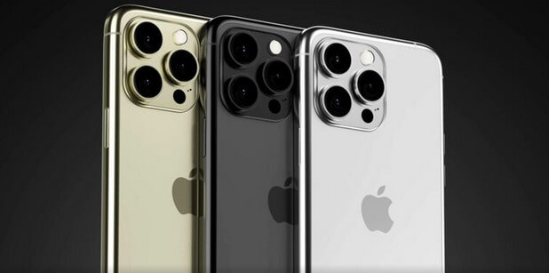

The company from Cupertino was not satisfied with the sale of smartphones of the past generation, so in 2023 it was decided to seriously rework the whole line.
The main innovation of the new iPhones will be bringing all line models to a common design code. This year even the iPhone 15 and iPhone 15 Plus will receive an island cutout in the screen, which will replace everyone's boring visor.
In addition, the new items will support Wi-Fi 7, which they need to better compatibility with the Vision Pro VR helmet. And here is the camera periscope type awaits only flagship models: iPhone 15 Pro and iPhone 15 Pro Max.
Despite the low popularity of the iPhone 14, reduce prices for Apple's new items most likely will not. Rather, the opposite is true. Companies are becoming increasingly difficult to resist inflation. That's why there is a high risk of price increases for the iPhone 15. Even hinted at this CEO Tim Cook, who said that people in general, they are ready to pay more for iPhones.
Almost simultaneously, sources from several technology and business publications reported a problem faced at the factories of Foxconn, Apple's main assembler of equipment. It is reported by "The Rambler".
The issue is related to the new displays for the iPhone 15 Pro and iPhone 15 Pro Max. It is reported that due to the decrease in the thickness of the frame around the Pro-series screens to 1.5 mm, their manufacturer, LG Display, applied a new technological process and displays for the iPhone 15 Pro and especially for the Pro Max did not pass tests for reliability of fastening to metal smartphone case. Apparently, this is the same issue that Apple has experienced in the past with some Apple Watch models.
Now Apple and LG are working on a solution. Apple also has displays made by Samsung that can be used to assemble the iPhone 15 Pro and iPhone 15 Pro Max.
Analysts estimate the delay in the production of the Pro-series at the level of 15-17 percent from the same period last year. This is a significant lag, which, if not affect the date of the announcement of the entire line, it may affect the start of sales of Pro and Pro Max.
Another issue Apple fans are worried about is a possible price increase for the iPhone 15 Pro and iPhone 15 Pro Max.
If this happens, it will be the first official price increase for premium iPhones. Since the introduction of the $999 iPhone X in 2017 and the $1,099 iPhone XS Max in 2018, the prices of the top-of-the-line Pro models have not changed
Considering how long Apple has kept the price of the Pro series, a price increase is more than likely.